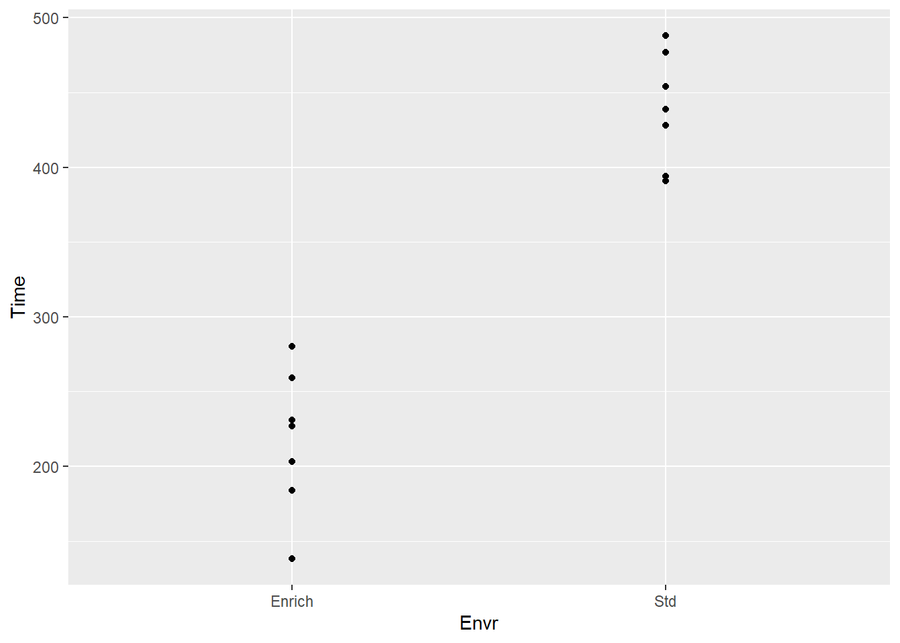
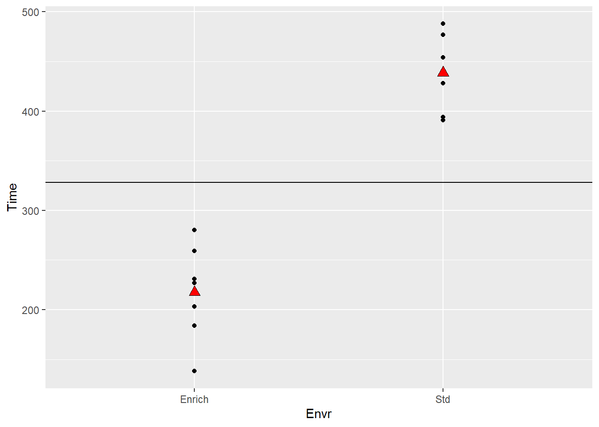
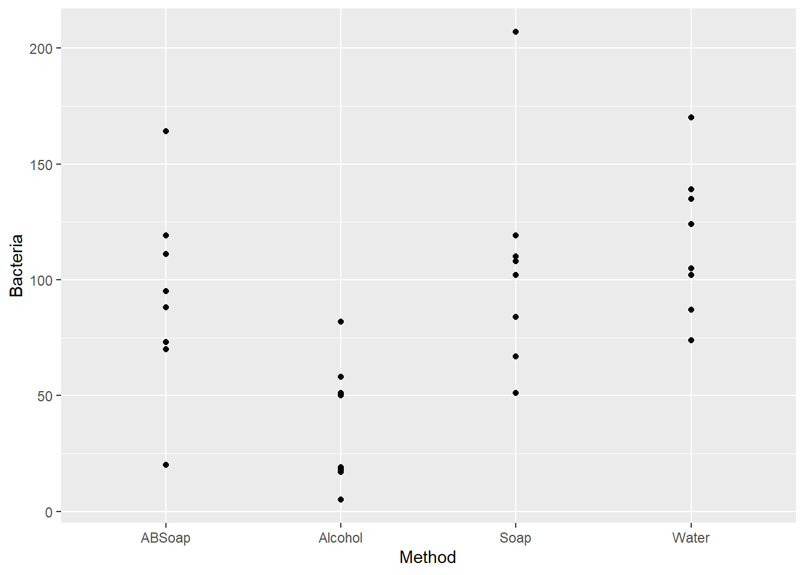
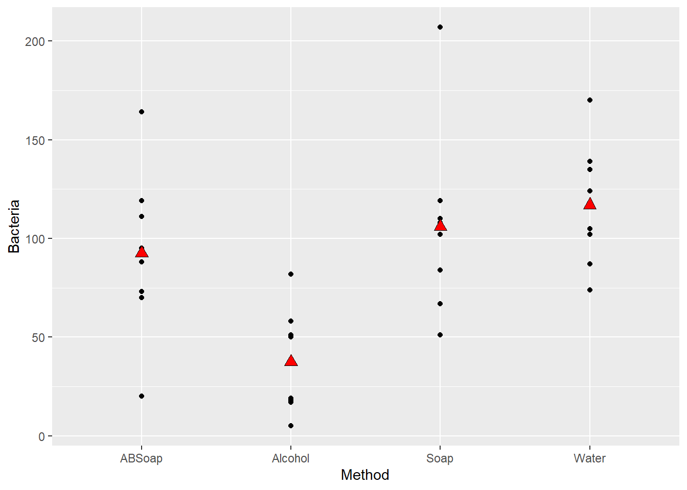
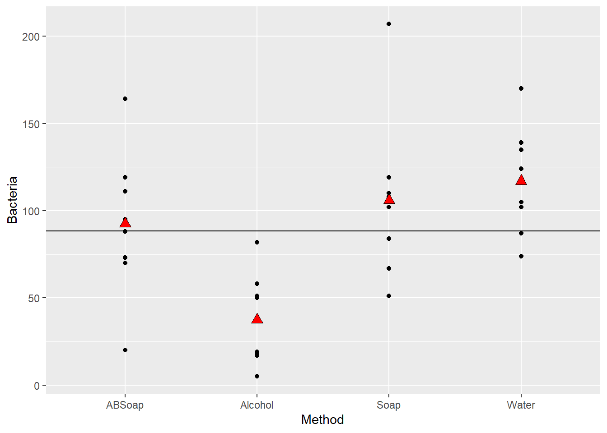
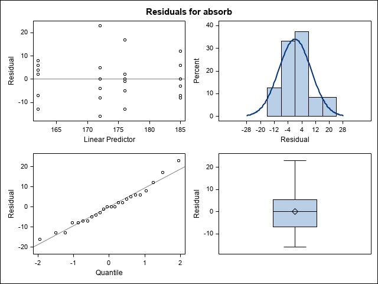
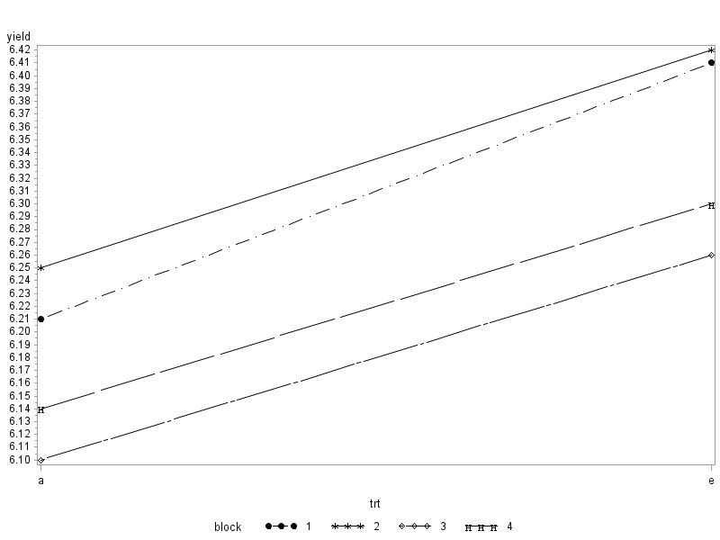

5One Predictor/Explanatory Variable, More Than Two Levels
As mentioned at the end of Chapter 4, we’ll now move on to cases in which we have a single explanatory variable and a single response variable. In this section, we’ll cover the case where the explanatory variable is categorical with more than two levels, and the response variable is either categorical or numeric. This means that in this chapter, we’ll be focusing on comparing more than two groups
Data like these may show up in a spreadsheet like
5.1 Categorical Response, More Than Two Levels
First, we’ll consider situations in which two categorical variables are measured on each unit in the sample, and each variable has potentially more than two possible values. Many categorical variables have more than two possible outcomes, so we can’t easily define the proportion of “successes.” Instead, we’ll summarize categorical data with more than two levels using two-way tables. In this class, we’re still going to restrict ourselves to only two variables (often explanatory and response, but not necessarily), both with two or more levels. However, there are certainly statistical methods for more complicated situations.
Typically, research questions focus on how the proportions of the possible outcomes in the response variable change (or don’t) across the levels of the explanatory variable. However, we can also consider questions about a single variable with more than two outcomes (are the possible outcomes all equally likely? do the possible outcomes follow a particular pattern? We’ve already seen these!) or just whether the two categorical variables are independent or dependent without assigning an explanatory/response relationship. Due to the structure of the variable(s), there really isn’t a population parameter of interest. We can’t (usually) make a function of proportion of successes that makes sense to estimate, like we can with \(p_1 - p_2\). That means we’ll be considering only tests, not confidence intervals.
Example: When surveys are administered, we hope that the respondents give accurate answers. Does the mode of survey delivery affect this? Schober et al (2015) investigated this question. They had 147 people who agreed to be interviewed on an iPhone, and they were randomly assigned to one of three interview modes: human voice, automated voice, text. One question asked was whether they exercise less than once per week during a typical week (a yes is mostly likely considered socially undesirable). The explanatory variable here is survey mode and the response is whether or not the respondent said yes. Here are the data:
Survey Mode Data
Text
Human Voice
Automated Voice
Total
Exercise Yes
34
21
20
75
Exercise No
124
139
139
402
Total
158
160
159
477
Based on these data, it looks like the answer to the question does change depending on survey mode, with respondents more likely to say yes via text. However, we don’t know if this result could have happened by chance.
We saw expected counts when we did \(\chi^2\) goodness of fit tests. We’ll need to find them again here. We don’t expect the proportion of ‘yes’ to be exactly the same across all survey modes, but we want to know if these vary enough to convince us that survey mode and answer are not independent. To do this, we need to find expected counts for each cell in the table.
So, \[
\hbox{Expected Count}_{\hbox{row } i, \hbox{col } j} = \frac{(\hbox{row } i \hbox{ total})(\hbox{col } j \hbox{ total})}{\hbox{table total}}
\]
Survey Model Data with Expected Counts
Human
Automated
Text
Voice
Voice
Total
Exercise Yes
34 (________)
21 (________)
20 (_________)
75
Exercise No
124 (________)
139 (________)
139 (________)
402
Total
158
160
159
477
So just like with the goodness-of-fit test, the key question is whether the observed and expected cell counts are different enough.
Cell(1,1) obs - exp = 34 -
Cell(1,2) obs - exp = 21 -
Cell(1,3) obs - exp = 20 -
Cell(2,1) obs - exp = 124 -
Cell(2,2) obs - exp = 139 -
Cell(2,3) obs - exp = 139 -
Our \(\chi^2\) test statistic gets just a little more complicated:
Example: Integrated Pest Management (IPM) adopters apply significantly less insecticides and fungicides than nonadopters among grape producers. A 2008 paper published in Agricultural Economics gave data on IPM adoption rates for the six states that accounted for most of the US grape production. The data are in the file ‘ipmtable.csv’.
Example: A study of drinking habits of college students at a particular college produced the two-way table found in ‘drinkingtable.csv’ and shown below. Students were randomly selected to participate in the survey.
We’re going to start this section by considering an example. The data are in the file ‘mice.csv.’
Example: These data come from an experiment to determine if exercise confers some resilience to stress. Mice were randomly assigned to either an enriched environment (exercise wheel) or standard environment, and spent three weeks there. After that time, they were exposed for five minutes per day for two weeks to a “mouse bully”–a mouse very strong, aggressive, and territorial. After those two weeks, anxiety in the mice was measured, as amount of time hiding in a dark compartment. Mice that are more anxious spend more time in darkness. We want to determine if there is a difference in time spent in darkness for the two groups of mice.
We already know how to answer this research question!
Let’s first plot the data

It definitely looks like there’s a difference between the groups! We can find the group means and standard deviations. We’ll also add the sample means to the plot.
We’re testing H\(_0: \mu_1 = \mu_2\), and assume this is true to construct the test. The overall common sample mean is \(\bar x = 328.07\).
t.test(Time~Envr,data=mice)
Welch Two Sample t-test
data: Time by Envr
t = -9.6526, df = 11.407, p-value = 7.885e-07
alternative hypothesis: true difference in means between group Enrich and group Std is not equal to 0
95 percent confidence interval:
-271.5245 -171.0470
sample estimates:
mean in group Enrich mean in group Std
217.4286 438.7143

It turns out the difference between the two groups will also manifest itself in the variances. There will be variation between the group means and the overall mean, as well as variation between the data points and their group means.
Remember how sample variance is calculated:
We’re exploring how far, on average, observations are from the mean (squared). So, variance has to be positive. If there is a difference between the group means, the first kind of variation (between the group means and the overall mean) will be much greater than the second kind of variance (between the data points and their group mean). We can test whether the first variance is bigger than the second using an \(F\) statistic, just like we did in the last section when we were comparing two variances:
\[
F = \frac{\hbox{variance between group means and overall mean}}{\hbox{variance between the data points and their group mean}}
\]
If the variances are about equal, there’s no evidence of a difference between the group means–they vary as much from the overall mean as data points vary from their group mean. This will result in an \(F\) statistic of about 1. If there is a difference between the group means, the first kind of variation (between the group means and the overall mean) will be much greater than the second kind of variance (between the data points and their group mean). This will result in an \(F\) statistic greater than 1.
For the mice data:
Notice!
We made some assumptions to carry out the \(t\)-test:
approximate normality (no extreme outliers, no strong skew)
independence between groups and between observations
constant variance (we didn’t make a big deal of this one, but mentioned it)
We can summarize these assumptions very succinctly, and to do so we’re going to introduce some new notation.
Consider a random sample of observations from a normal distribution with mean \(\mu\) and variance \(\sigma^2\). If we let \(Y_1, Y_2,\dots, Y_n\) represent our data points we can summarize this as:
Or another way:
This is a statistical model with 2 parameters: \(\mu\) and \(\sigma^2\).
Example: A student carried out an experiment to investigate handwashing methods: water only, regular soap, antibacterial soap, and alcohol spray. Each treatment was replicated 8 times, and bacteria count was observed. The data are in ‘handwash.csv’.

Group.1 x
1 ABSoap 92.5
2 Alcohol 37.5
3 Soap 106.0
4 Water 117.0
Group.1 x
1 ABSoap 41.96257
2 Alcohol 26.55991
3 Soap 46.95895
4 Water 31.13106


Remember how to calculate the sample variance, \(S^2 = \frac{\sum_{i=1}^n (y_i - \bar y)^2}{n-1}\). We’re going to look at three difference variances. Let’s assume for simplicity that \(n_i = n\) (all groups have equal sample size, this is not really necessary, it’s just to make it easier to look at notation):
Total Variance. Another name for the numerator is total sum of squares.
Error (Within-Group) Variance. Another name for the numerator is the error sum of squares.
Model (Between-Group) Variance. Another name for the numerator is the treatment (model) sum of squares.
To see what this is measuring, first consider the ‘inside’ sum:
This is still an estimate of variance, but it’s an estimate of \(\sigma^2/n\), because these are means. In order to be able to compare fairly to the error variance we must multiply by \(n\) (only works with equal sample sizes) or, equivalently, take the sum from \(j=1\) to \(n\):
We can’t lose sight of what we’re interested in here: testing H\(_0: \mu_1 = \mu_2\). If H\(_0\) is true, \(\bar y_1\) and \(\bar y_2\) should not be different from \(\bar y_{\cdot \cdot}\). This means that error variance should be about equal to model variance (both would estimate \(\sigma^2\)). If H\(_0\) is not true, model variance will be larger because of the deviations of the group averages from the grand average. If it’s much larger, this gives us evidence against H\(_0\).
Why do we worry about three variances when we only use two (error and model) to get the \(F\) stat? It turn out that: \[
\hbox{Total SS } = \hbox{Model SS } + \hbox{ Error SS}
\] For the mice data:
To convert these sums of squares into variances (which we call mean squares), they must be divided by denominators noted above. These are degrees of freedom, and have the same relationship as the sums of squares do: \[
\hbox{Total } df = \hbox{ Model } df + \hbox{ Error } df
\]
We often summarize our calculations in a table (\(df\) assuming equal sample sizes):
Source
\(df\)
SS
MS
Model
\(t-1\)
SSModel
MSModel
Error
\(t(n-1)\)
SSError
MSError
Total
\(nt-1\)
SSTotal
The MSError (usually called MSE) is our estimate of \(\sigma^2\). In our mice example, we get the table:
Source
\(df\)
SS
MS
Model
1
171386
171386
Error
12
22073
1839
Total
13
193459
To test H\(_0: \mu_1 = \mu_2\) we use the F stat: \[
F = \frac{\hbox{MSModel}}{\hbox{MSError}} = \frac{171386}{1839} = 93.2
\] and we can add this to the table:
Source
\(df\)
SS
MS
F
Model
1
171386
171386
93.2
Error
12
22073
1839
Total
13
193459
What we’ve just done is called an Analysis of Variance (ANOVA), and the resulting table is called an ANOVA table. It’s a single hypothesis test to check whether the means across many groups are equal. Specifically, it’s testing:
We still have assumptions: - Independence between and among groups - Responses/errors are approximately normal - Variability across groups is about equal
We already know how to determine if \(F=93.2\) is enough greater than 1 to determine there’s a difference–the \(F\) distribution we used to test the equality of two variances in the last section. Our numerator and denominator degrees of freedom will be the Model \(df\) and Error \(df\), respectively:
pf(93.2,df1=1,df2=12,lower.tail=FALSE)
[1] 5.232224e-07
The p-value typically gets added to the table as well:
Source
\(df\)
SS
MS
F
p-value
Model
1
171386
171386
93.2
0.0000005
Error
12
22073
1839
Total
13
193459
This is the only time we’ll do an ANOVA by hand! Let’s do the same in R.
anova(lm(Time~Envr, data=mice))
Analysis of Variance Table
Response: Time
Df Sum Sq Mean Sq F value Pr(>F)
Envr 1 171386 171386 93.173 5.24e-07 ***
Residuals 12 22073 1839
---
Signif. codes: 0 '***' 0.001 '**' 0.01 '*' 0.05 '.' 0.1 ' ' 1
Example: Let’s now carry out the ANOVA on the handwashing data. We’ll start by writing the model and sketching the ANOVA table.
anova(lm(Bacteria~Method,data=handwash))
Analysis of Variance Table
Response: Bacteria
Df Sum Sq Mean Sq F value Pr(>F)
Method 3 29882 9960.7 7.0636 0.001111 **
Residuals 28 39484 1410.1
---
Signif. codes: 0 '***' 0.001 '**' 0.01 '*' 0.05 '.' 0.1 ' ' 1
We could also use SAS:
PROC IMPORT OUT= WORK.mice
DATAFILE= "C:\Users\Erin\OneDrive - University of Nebraska-Lincoln\STAT 801\Book Notes\mice.csv"
DBMS=CSV REPLACE;
GETNAMES=YES;
DATAROW=2;
RUN;
proc glimmix data=mice;
class Envr;
model Time=Envr;
run;
SAS proc glimmix uses a different numerical method to calculate the ANOVA, and so the SSTrt/SSError don’t exist in the same way.
For the handwash data:
PROC IMPORT OUT= WORK.handwash
DATAFILE= "C:\Users\Erin\OneDrive - University of Nebraska-Lincoln\STAT 801\Book Notes\handwash.csv"
DBMS=CSV REPLACE;
GETNAMES=YES;
DATAROW=2;
RUN;
proc glimmix data=handwash;
class Method;
model Bacteria=Method;
run;
The reason I like SAS for ANOVA is because we can easily add fanciness:
proc glimmix data=handwash;
class Method;
model Bacteria=Method;
lsmeans Method/pdiff cl;
run;
Next, we’ll add some more details and formality to the ANOVA.
5.3 The Completely Randomized Design
Way back in the first section, we talked about the steps in a statistical investigation
Step 1: Ask a research question
Step 2: Design a study and collect data
Step 3: Explore the data
Step 4: Draw inferences beyond the data
Step 5: Formulate conclusions
Step 6: Look back and look ahead
As part of Step 2, we noted that we need to consider questions like ‘what variable(s) wil be measured’. This basically involves identifying the response variable as well as any explanatory variable(s). Now, let’s introduce some new terminology that really only becomes relevant once we are doing ANOVA.
Example: Handwash, again. The student considered four treatments: water only, regular soap, antibacterial soap, and alcohol spray.
In this example, there is one factor.
Definition:
In order to study the effect of the factor on the response, two or more values of the factor are considered. These values are called levels.
In some cases, there is more than one factor.
Example: Two students at Queensland University of Technology, as a project for their statistics class, carried out an experiment to test the effect certain factors such as refrigeration, stem length, and water content have on the life of a cut rose. The students considered
Stem length (15 cm or 25 cm)
Water content (tap water or tap water + citric acid)
Temperature (refrigerated or room temperature)
The response measured was the number of days until death, and the goal was to determine the conditions that will extend rose life.
In this example, there are 3 factors:
Each factor has 2 levels:
In multifactor experiments like this, we define a treatment as a combination of factor levels.
Factors:
Levels:
-Treatments:
We also have to consider the treatment design and the experimental design.
Definition: The treatment design
Definition: The experimental design
The experimental design should address the three basic principles underlying formal experimentation:
Replication: a repetition of the basic experiment
Randomization: both allocation of experimental material and order in which individual runs/trials are performed
Control: control the effect of extraneous variables
The first experimental design we’ll consider is the completely randomized design or CRD. The CRD is an experimental design because
The CRD is characterized by
The CRD may be combined with several different treatment designs. To explore the CRD in more detail, we’ll start with the simplest treatment design, the one-way design. The one-way design is so named because
Within one-way designs there are four basic treatment structures:
Unstructured
Control versus other treatments
Quantitative
Other structure
Example: Handwash, again. The student considered four treatments: water only, regular soap, antibacterial soap, and alcohol spray. The student replicated each treatment 8 times.
Treatment Design:
Factor:
Levels:
Experimental Design:
Run 8 trials in a Completely Randomized Design
Here’s one possible sequence of trials:
AL
RS
AB
W
W
AL
AB
RS
RS
RS
RS
AL
RS
AB
AB
AB
W
W
AB
AB
AL
W
RS
RS
AB
AL
W
W
AL
W
AL
AL
5.3.1 CRD Model and Basic Analysis
The CRD Model can be written in two different ways.
\(y_{ij}\) = bacteria count for the \(j^{th}\) trial after handwashing the \(i^{th}\) method
\(\mu\) = overall mean bacteria count
\(\tau_i\) = treatment effect of method \(i\) = additional amount of bacteria observed using handwashing method \(i\)
\(\epsilon_{ij}\) = random error = additional amount of bacteria in the \(j^{th}\) trial using handwashing method \(i\)
Example: A donut manufacturer wants to see if the type of fat used to fry the donuts has any impact on the amount of fat absorbed by the donuts. The manufacturer has two types of animal fat and two types of vegetable fat that they would like to compare. They also have available 4 fryers, which can each fry 1 batch of 18 donuts at a time. They plan to measure the amount of fat absorbed in each batch.They have the resources to test 24 total batches of donuts.
Treatment Design:
Factor:
Levels:
Experimental Design:
Run 6 batches of each fat in a Completely Randomized Design
For this particular treatment design, there are several hypothesis tests that may be of interest. Write out in the symbols the null and alternative hypotheses for the following specified objectives. Reminder: Fats 1 and 2 are animal fats and Fats 3 and 4 are vegetable fats.
Are there differences among the four fats with respect to the amount of fat absorbed?
Do the vegetable fats differ from the animal fats in the amount of fat absorbed?
Are there differences between the two animal fats? Are there differences between the two vegetable fats?
We’ve already seen how to fit the basic ANOVA in R and SAS.
data donut;
do type=1 to 4;
input absorb @@;
output;
end;
datalines;
164 178 175 155
172 191 193 166
168 197 178 149
177 182 171 164
156 185 163 170
195 177 176 168
;
proc glimmix data=donut;
class type;
model absorb=type;
lsmeans type/pdiff cl;
run;
5.3.2 Treatment Comparisons and Contrasts
We can see in the results above that we may reject the overall hypothesis that the four treatments produce the same mean fat absorption (\(F=5.41\), p-value\(=0.0069\)). But, this doesn’t address the hypotheses you constructed earlier. Remember, we also considered:
Do the vegetable fats differ from the animal fats in the amount of fat absorbed?
Are there differences between the two animal fats?
Are there differences between the two vegetable fats?
The output above allows us to address some of these questions, but not the one regarding vegetable fats versus animal fats. Let’s look at a more general way to construct treatment comparisons.
Contrasts
A well-thought-out treatment design’s objectives can usually be stated in terms of a set of contrasts. This is usually an important goal in planning the design, and contrasts are constructed before data are collected.
A contrast is
Estimates of the contrast are obtained by substituting in the sample means
We may also obtain standard errors of the contrast estimate
Standard errors may then be used to carry out tests and construct confidence intervals.
The contrasts of interest depend on the basic treatment design structure and the goals of the experiment. Remember, the four basic structures are
Unstructured
Control versus other treatments
Quantitative
Other structure
Let’s first consider Unstructured designs, because these are the simplest.
5.3.2.1 Unstructured Treatment Designs and All Pairwise Comparisons
Example: Handwashing, again. The student considered four treatments: water only, regular soap, antibacterial soap, and alcohol spray. The student replicated each treatment 8 times.
Treatment Design:
Factor:
Levels:
Experimental Design:
Run 8 trials in a Completely Randomized Design
In designs like this without structure, we are typically interested in all pairwise comparisons.
There are multiple methods for making such comparisons. The simplest is the least significant difference (LSD), also called the unprotected LSD. It’s easy, but the Type I error rate can be badly inflated (we’ll talk more about this in a bit).
A (slightly) more conservative option is Fisher’s protected LSD.
We’ve already seen these, but let’s add even more fanciness!
proc glimmix data=handwash;
class Method;
model Bacteria=Method;
lsmeans Method/pdiff cl lines plot=diffplot;
run;
This plot is called a diffogram and is a way to visualize differences among the treatments.
So these plots are awesome, and the output is easy to interpret! Why do we care about anything other than the LSD? The big issue is Type I error rate, and it can be a concern for pairwise comparisons as well as more complicated contrasts.
Multiple Comparisons
If more than one comparison is made among the treatment means, then we have multiple comparisons which can lead to the problem of multiplicity.
Definition:Multiplicity is
For a single test, the significance level of a Type I error is called a comparison-wise error rate. This means
But, if we have multiple tests, the Type I errors for these tests accumulate. This accumulated rate is the called the experiment-wise error rate. This is
But, the errors don’t just add up. They accumulate in a power-type relationship. Consider a situation with a comparison-wise error rate of \(\alpha\) and \(c\) independent comparisons. Then, the experiment-wise error rate is
For example, consider a situation with \(\alpha=0.05\) and 5 independent comparisons (there are as many independent comparisons as there are \(df\) for treatment). In that case:
We can control the experiment-wise error rate by setting it to a pre-specified value \(\alpha\) (maybe 0.05) and then solving for the comparison-wise error rate, assuming \(c\) independent comparisons. So, for example, if \(\alpha=0.05\) and \(c=5\),
We’d then use this as the critical value (cut-off) value for our independent treatment comparisons.
But here’s another issue. If the comparisons are not independent (which they aren’t in all pairwise-comparisons, and often aren’t in pre-planned contrasts of interest), then the experiment-wise error rate is actually even bigger than we see above. What can we do?
There are a multitude of multiple comparison procedures which control the overall experiment-wise error rate, which have different pros and cons. We’re only going to the talk about a few.
Tukey’s HSD: Tukey’s Honestly Significant Difference (HSD) procedure is based on the studentized range statistic. To get this HSD from SAS:
proc glimmix data=handwash;
class Method;
model Bacteria=Method;
lsmeans Method/pdiff cl adjust=tukey;
run;
We could also request lines and the diffogram; they would be adjusted as well.
The other multiple comparison procedures we’ll discuss are used with other treatment design structures. The three other one-way treatment design structures are:
Control versus other treatments
Quantitative (we’ll put a pin in this one for now)
Other structure
5.3.2.2 Control versus other treatments
In some scenarios, one of the factor levels acts as a control treatment for some or all of the remaining levels. Often, we are interested in comparing all of the treatments against the control but not against each other. This means there are
Dunnett’s procedures is a modification to the two-sample \(t\) test that is used when comparing all treatments against a control.
Example: Sections of tomato plant tissue were grown in culture with differing amounts and types of sugars with five replications of four treatments. The treatments were: control, 3% glucose, 3% fructose, and 3% sucrose.
Treatment Design:
Factor:
Levels:
Experimental Design:
In a situation like this, we may be interested in comparing each of the sugar treatments to the control.
data tomato;
input trt $ growth @@;
datalines;
control 45 glucose 25 fructose 28 sucrose 31
control 39 glucose 28 fructose 31 sucrose 37
control 40 glucose 30 fructose 24 sucrose 35
control 45 glucose 29 fructose 28 sucrose 33
control 42 glucose 33 fructose 27 sucrose 34
;
proc glimmix data=tomato;
class trt;
model growth=trt;
lsmeans trt/diff=control('control') cl adjust=dunnett plot=controlplot;
run;
Note that unless otherwise specified, SAS will assume the first treatment level (alphabetically or numerically) is the control.
5.3.2.3 Treatment Designs with (other) Structure
This is where the donut example fits in. There isn’t a true control, but we also may not care about all pairwise comparisons. Instead, we had some specific, pre-planned comparisons of interest:
Do the vegetable fats differ from the animal fats in the amount of fat absorbed?
Are there differences between the two animal fats?
Are there differences between the two vegetable fats?
Why pre-plan comparisons?
Earlier, we wrote out the hypotheses of interest corresponding to these comparisons:
There are three options available in SAS to test these hypotheses and/or construct confidence intervals:
contrast statement
estimate statement
lsmestimate statement
All three statements involve specifying the coefficients of the treatment effects/treatment means. Let’s look at the comparison of vegetable and animal fats.
and two different contrast statements we could write:
proc glimmix data=donut;
class type;
model absorb=type;
contrast "animal vs veg" type 1 1 -1 -1;
contrast "animal vs veg 2" type 0.5 0.5 -0.5 -0.5;
run;
Both give the same results!
Contrasts
Num Den
Label DF DF F Value Pr > F
animal vs veg 1 20 5.37 0.0313
animal vs veg 2 1 20 5.37 0.0313
Let’s try them with estimate statements, and add a third option:
estimate "animal vs veg" type 1 1 -1 -1;
estimate "animal vs veg 2" type 0.5 0.5 -0.5 -0.5;
estimate "animal vs veg 3" type 1 1 -1 -1/divisor=2;
Estimates
Standard
Label Estimate Error DF t Value Pr > |t|
animal vs veg 19.0000 8.2016 20 2.32 0.0313
animal vs veg 2 9.5000 4.1008 20 2.32 0.0313
animal vs veg 3 9.5000 4.1008 20 2.32 0.0313
type Least Squares Means
Standard
type Estimate Error DF t Value Pr > |t|
1 172.00 4.1008 20 41.94 <.0001
2 185.00 4.1008 20 45.11 <.0001
3 176.00 4.1008 20 42.92 <.0001
4 162.00 4.1008 20 39.50 <.0001
What’s going on?
Suppose for some reason we wanted to test whether fats 1-3 (collectively) were different from fat 4.
The way we write the estimate statement really matters here:
estimate "first 3 vs last" type 0.33 0.33 0.33 -1;
estimate "first 3 vs last" type 1 1 1 -3/divisor=3;
Estimates
Standard
Label Estimate Error DF t Value Pr > |t|
first 3 vs last Non-est . . . .
first 3 vs last 15.6667 4.7352 20 3.31 0.0035
We do still have a multiplicity issue, because we are interested in three pre-planned contrasts. We can use the Sidak adjustment to control experiment-wise error rate:
estimate "1 vs 2" type 1 -1 0 0,
"3 vs 4" type 0 0 1 -1,
"animal vs veg" type 0.5 0.5 -0.5 -0.5/adjust=sidak;
Estimates
Standard
Label Estimate Error DF t Value Pr > |t|
animal vs veg 2 9.5000 4.1008 20 2.32 0.0313
Estimates
Adjustment for Multiplicity: Sidak
Standard
Label Estimate Error DF t Value Pr > |t| Adj P
1 vs 2 -13.0000 5.7994 20 -2.24 0.0365 0.1055
3 vs 4 14.0000 5.7994 20 2.41 0.0255 0.0745
animal vs veg 9.5000 4.1008 20 2.32 0.0313 0.0909
Finally, we can use the lsmestimate statement. lsmestimate basically does the same thing as estimate but it allows for more complicated models than we have yet encountered. For a CRD, the output of the two should be identical, though lsmestimate does have some additional options (and slightly different syntax).
lsmestimate type "1 vs 2" 1 -1 0 0,
"3 vs 4" 0 0 1 -1,
"animal vs veg" 0.5 0.5 -0.5 -0.5/joint;
The joint option gives a joint test for whether the LSMeans are the same, which is the same as the overall test in the simple designs like the CRD. There are also multiple comparison adjustments available in lsmestimate.
What happens if you don’t pre-plan? Ideally, comparisons are set up ahead of time based on specific research questions. If comparisons are selected after examining the data, most researchers construct tests that correspond to large differences in the means. These differences could be due to a real treatment effect, or they could be due to random error. Picking the largest differences to compare will inflate Type I error. If you do want to look at comparisons suggested by the data (post hoc comparisons), then you should replace the \(t\) test with a VERY conservative test called the Scheffé test. Scheffè works for pairwise comparisons or contrasts. We request it by adding the adjust=scheffe option.
To see how conservative Scheffè is, let’s look at the comparison of Fats 1 vs 2 (and pretend that Fat 1 is a control, just for illustration.
Adjustment Type
p-value
Lower CL
Upper CL
Unadjusted
0.0365
-25.0974
-0.9026
Tukey
0.1462
-29.2320
3.2320
Dunnett
0.0908
-27.7326
1.7326
Scheffè
0.2044
-30.6813
4.6813
What do you notice?
Which one to use? It depends. Is it more important to control the comparison-wise error rate or experiment-wise error rate? That will depend on the situation. Keep in mind that the more conservative the adjustment, the lower the power. That is, the more likely you are to make a Type II error.
Example: A study is being planned to study the ability of a liberty ship artificial reef to attract and hold macrobenthic epifauna. One of the variables of interest is the density of oysters, and researchers are interested in comparing different locations on the artificial reef. There are 6 locations
Floors of holds
Sides of holds
Starboard deck
Starboard side
Port side
Port deck
and 12 observations were randomly sampled at each location.
Treatment Design:
Factor:
Levels:
Experimental Design:
Model:
The researcher is particularly interested in some specific comparisons. We’ll write the contrasts to address each one.
Floors versus sides of holds
Port versus starboard
Deck versus sides, except for holds
Port sides versus starboard sides
Port decks versus starboard decks
Port side versus port deck
Starboard side versus starboard deck
5.3.3 Model Adequacy
Everything we’ve done so far is based on the assumptions that the observations are adequately described by the model
If these assumptions are not valid, then the estimates of the treatment means and tests of significance from the ANOVA will be affected. We typically use residuals as a basis of our diagnostic tools.
The residual for observation \(j\) in treatment \(i\) is defined as:
Examining residuals should be an automatic part of the analysis of variance, and can be used to check the assumptions of common variance and normality of the error term. The assumptions can be checked using a visual inspection or formally through tests, and SAS makes it very easy to do so.
There’s a lot of code here, but we’ll examine it piece-by-piece.
proc glimmix data=donut plot=residualpanel;
class type;
model absorb=type;
random _residual_/group=type;
covtest homogeneity;
output out=donutout pred=pred residual=resid;
run;
Here’s what the options are doing:
plot=residualpanel produces a set of residual plots
random _residual_/group=type tells SAS you want to estimate a residual variance for each treatment group (i.e., get separate estimates of \(\sigma^2\) from each treatment group)
covtest produces a hypothesis test for comparing variances, and homogeneity says you want to test whether they are all equal
output produces a new data set (called donutout) which contains the observed residuals (resid) and predicted values (pred)

Residual panel for the donut data
The upper left hand plot shows
The other three plots all deal with the normality assumption.
We can also use proc univariate to check normality, using the donoutout data set we created above.
proc univariate data=donutout plot normal;
var resid;
run;
Here’s part of the output
Tests for Normality
Test --Statistic--- -----p Value------
Shapiro-Wilk W 0.972165 Pr < W 0.7205
The Shapiro-Wilk test is the most commonly used test for normality. A highly significant p-value would indicate there may be a problem with non-normality.
What happens if we do see a large departure from normality?
The other assumption we can check with residuals is the constant variance assumption, also called the assumption of homogeneous variances. From the SAS output
Covariance Parameter Estimates
Standard
Cov Parm Group Estimate Error
Residual (VC) type 1 178.00 112.58
Residual (VC) type 2 60.4000 38.2003
Residual (VC) type 3 97.6000 61.7277
Residual (VC) type 4 67.6000 42.7540
Type III Tests of Fixed Effects
Num Den
Effect DF DF F Value Pr > F
type 3 20 8.39 0.0008
Tests of Covariance Parameters
Based on the Restricted Likelihood
Label DF -2 Res Log Like ChiSq Pr > ChiSq Note
Homogeneity 3 156.21 1.90 0.5942 DF
DF: P-value based on a chi-square with DF degrees of freedom.
The covariance parameter estimates are the estimates of the variances for each of the four treatments, along with their standard errors. What do you notice?
The Tests of Covariance Parameters is testing the null hypothesis that the four variances are equal, versus the alternative that at least one is different.
In general, moderate departures from normality are of little concern, especially with the CRD. Nonconstant variance can be a bigger issue, but there are things we can do (like transformations) to stabilize the variance.
5.3.4 Power for the Completely Randomized Design
With multiple comparisons, we talked about Type I error and its probability. We defined Type I error as rejecting the null hypothesis when it is, in fact, true. If P(Type I error) = \(\alpha\), then P(no Type I error) = \(1-\alpha\).
There is another kind of error – Type II error. A Type II error occurs when H\(_0\) is not rejected, but H\(_0\) is actually false. Earlier this semester, we summarized these two types of errors in a table:
Earlier in STAT 801 we’ve said that we can “set” the probability of a Type I error. Anytime we say we’ll reject H\(_0\) if the p-value \(< \alpha\), we’re setting P(Type I error) = \(\alpha\). What about Type II error? We generally call the probability of a Type II error \(\beta\), P(Type II error) = \(\beta\). The problem is we can’t “set” both \(\beta\) and \(\alpha\) without some other complications.
We are typically interested in the power of a test:
Let’s explore this via simulation. Consider a two-sample \(t\)-test. In Canvas, there is an R file called simulation example.R.
In the program, we’re generating \(n_1=20\) normal random variables with \(\mu_1=10\), \(\sigma^2=25\) and \(n_2=20\) normal random variables with \(\mu_2=10\), \(\sigma^2=25\).
Carry out the t-test (code already included) and observe the p-value. Using \(\alpha=0.10\), what is your decision?
Run the program 9 more times, so you have a total of 10 p-values. How many times out of 10 did you reject H\(_0\)?
What does this estimate?
Edit the program to generate data with \(\mu_1=10\) and \(\mu_2=12\) (still with \(n_1=n_2=20\) and \(\sigma^2=25\)). Run the program 10 times total. How many times did you reject H\(_0\), using \(\alpha=0.10\)?
Edit the program to generate data with \(\mu_1=10\) and \(\mu_2=15\) (still with \(n_1=n_2=20\) and \(\sigma^2=25\)). Run the program 10 times total. How many times did you reject H\(_0\), using \(\alpha=0.10\)?
Edit the program to generate data with \(\mu_1=10\) and \(\mu_2=20\) (still with \(n_1=n_2=20\) and \(\sigma^2=25\)). Run the program 10 times total. How many times did you reject H\(_0\), using \(\alpha=0.10\)?
What do you observe as \(\mu_1\) and \(\mu_2\) get further apart?
Now let’s try the following:
Edit the program to generate data with \(\mu_1=10\) and \(\mu_2=12\), but with \(\sigma^2=1\) (still with \(n_1=n_2=20\)). Run the program 10 times total. How many times did you reject H\(_0\), using \(\alpha=0.10\)?
Edit the program to generate data with \(\mu_1=10\) and \(\mu_2=20\), but with \(\sigma^2=625\) (still with \(n_1=n_2=20\)). Run the program 10 times total. How many times did you reject H\(_0\), using \(\alpha=0.10\)?
What do observe as \(\sigma^2\) gets larger or smaller?
Power is the probability of rejecting H\(_0\) when it is really false. It is a function of several quantities:
Power analyses usually focus on calculating the sample size required to achieve a particular power. What do you think would happen if instead of using \(n_1=n_2=20\) we used \(n_1=n_2=10\)?
What do you think would happen if instead of using \(n_1=n_2=20\) we used \(n_1=n_2=40\)?
What do you think would happen if instead of using \(n_1=n_2=20\) we used \(n_1=10\) and \(n_2=30\)?
In some simple situations, we can SAS procs to do power calculations. There are two: PROC POWER and PROC GLMPOWER. We’ll use PROC POWER. This proc will do power calculations for two sample \(t\) tests and ANOVA.
We’ll need to supply values for alpha, stddev, and meandiff. We can either supply a value for npergroup and use power=. or supply a value for power and use npergroup=.
We could also add the lines
plot x=power min=0.5 max=0.95; (for ntotal=.)
x=n min= max= ; (for power=.)
Let’s try this, going back to our example with \(\mu_1=10\), \(\mu_2=12\), and \(\sigma^2=25\).
We can also use PROC POWER for ANOVA and contrasts. This time, the basic code is:
Let’s go back to the donut data. In that example, the MSE was 100.90, so we’ll use \(\sigma=10\) as a guess for future experiments. We observed sample means of \(\overline y_{1\cdot}=172\), \(\overline y_{2\cdot}=185\), \(\overline y_{3\cdot}=176\), and \(\overline y_{4\cdot}=162\). We can certainly use these as guesses for future experiments. We’ll consider the contrast testing animal fats versus vegetable fats. We could also look at the overall test.
We can also add plot statements here.
But, we don’t actually have to have guesses for the treatment means. We do have to have an idea of how large a difference we want to be able to detect. With our example data, we had a animal fat mean of 178.5 and a vegetable fat mean of 169. This is a difference of 9.5.
We could also the consider potential differences we might observe in pairwise differences.
5.4 Block Designs
Up to now, we’ve concentrated on analyzing data coming from various treatment designs. We’ve considered multiple flavors of one-way designs (unstructured, control vs others, regression, other structure). In all cases though, we’ve been using the same experimental design: the completely randomized design (CRD). Now, we change our focus to other experimental designs. The treatment designs will be those we’ve seen before, and we’ll continue to analyze treatment effects using methods we’ve already discussed.
With a shift to experimental designs, we’ll be considering
This also means
We’re going to cover the simplest experimental design (besides the CRD): the randomized complete block design (RCBD) and leave more complicated block designs for STAT 802.
Consider an experiment in which we are interested in comparing six different lab activities for teaching the central limit theorem. Based on a power analysis, we believe four replications per treatment is sufficient, and so we need a total of 24 lab teams. We’ve got two options:
Which do you pick? Why? What are pros and cons of each?
Suppose you decide to use teams in different classes (or you don’t have a choice). How will you assign treatments to teams?
Suppose we allocate treatments to teams completely at random (CRD), and by chance four out of six teams in one class are assigned to treatment 1. Would you be okay with this?
One of the main problems with the CRD is a possible ‘conditional’ bias. That is, treatment assignment is not balanced relative to any systematic variation/gradient. In this experiment, the gradient is
When this happens, treatment effect is confounded with gradient. Is any effect we observe really due to treatment, or is it due to the effect of the class? The other problem with the CRD is variance inflation. Suppose there is a gradient among the experimental units, with response increasing as you go up a gradient:
Even if all the same treatment is applied throughout, the variance among the experimental units (the residuals) will be composed of two quantities:
This means it will appear larger than it actually is. The most common solution to these problems of confounding and variance inflation is blocking.
The idea of blocking is:
Blocking allows us to reconcile two somewhat opposing aims of experimental design.
In summary, the general idea of blocking is to organize experimental units into groups that are as uniform as possible. We want to
Blocks usually represent naturally occurring differences not related to treatments. If we block ‘correctly’ then the design accounts for block variation, and allows us to pull it out and isolate the usual random error due to experimental units. If we block ‘incorrectly’ then we get a weaker experiment.
How Do We Block?
There are two basic steps in blocking an experiment:
Organize the experimental units into subsets (blocks) according to gradient
Restrict the randomization so that each treatment is assigned to one or fewer (zero) experimental units in each block.
5.4.1 The Randomized Complete Block Design
The simplest block design is the randomized complete block design (RCBD). In this design
In the RCBD, we carry out the two steps referenced on the previous page as
Divide the experimental units into blocks of homogeneous units.
Randomly assign treatments to units within blocks, using a separate randomization for each block. Every treatment will appear in every block.
Again, we carry out step 1 with the goal
The model for the RCBD helps point out some considerations for choosing blocks. The model (assuming a one-way treatment design) is:
The ANOVA table looks like
Example: An experiment was carried out to evaluate the effect of elevated CO\(_2\) on rice grain yield. Four blocks of 2 rice paddies each (each block owned by a different farmer, who used different fertilizer regimes and management practices over the years) are available for the experiment. In each paddy there is a 12 m diameter circular plot. In one plot in each block there is a ring of tubing around the plot emitting CO\(_2\) at a rate of 300 ppm above ambient level. In the other plot, no CO\(_2\) is emitted. The grain yield is measured at 3 locations in each plot at the end of the season, and the response is the average of the 3 locations.
What is the experimental unit here?
What does the assumption of no block \(\times\) treatment interaction mean in this example?
We can check it with an interaction plot. Here are the means for each plot
Block
Ambient CO\(_2\)
Elevated CO\(_2\)
1
6.21
6.41
2
6.25
6.42
3
6.10
6.26
4
6.14
6.30

Interaction plot for treatment x block.
If you had been presented with this data earlier in the semester, how would you have analyzed it?
Block
Ambient CO\(_2\)
Elevated CO\(_2\)
1
6.21
6.41
2
6.25
6.42
3
6.10
6.26
4
6.14
6.30
5.4.2 Selecting Blocks
Remember that the RCBD is an experimental design, not a treatment design. It can be used with any treatment design. So, we might see RCBD layouts that look like:
Block 1
Block 2
Block 3
Control
Trt2
Trt4
Trt2
Control
Trt3
Trt3
Trt4
Trt2
Trt4
Trt3
Control
Block 1
Block 2
Block 3
20
60
80
60
40
20
80
80
40
40
20
60
Block 1
Block 2
Block 3
A1 & B1
A1 & B1
A2 & B2
A2 & B1
A2 & B1
A1 & B1
A2 & B2
A1 & B2
A1 & B2
A1 & B2
A2 & B2
A2 & B2
When you write a report, both the treatment design and the experimental design need to be described in the methods section.
Tips for Choosing Blocks:
We want to maximize differences between blocks and minimize differences within blocks
Block size should not be excessively large
Keep in the mind the no block \(\times\) treatment interaction assumption
Common Criteria for Blocking:
gradients that occur in the field, in greenhouses, in growth chambers
weight groups in animal experimentation, litters, cage positions in a room
occasion (day, month, year)
location (barn, different fields, different rooms, different states)
subjects (each subject serves as their own control)
5.4.3 RCBD Model and Analysis
Let \(y_{ij}\) be
Earlier we stated the model
We do have another choice to make. We can consider the block effect to either be a fixed effect or a random effect.
Our choice will have implications in the standard errors of the cell means.
To estimate the difference between two treatment means \((\mu_{i\cdot} - \mu_{i'\cdot})\), we use \(\overline y_{i\cdot} - \overline y_{i'\cdot}\). To figure out the variance (or estimate of the variance), let’s look at what \(\overline y_{i\cdot}\) is actually estimating:
Now let’s explore the variance of this quantity.
Now let’s consider \(\overline y_{i\cdot} - \overline y_{i'\cdot}\):
and its variance
If we want to construct confidence intervals for treatment means or differences, they’ll have the form
where the standard error is
For example, we use MSE as our estimate of \(\sigma^2\), so confidence intervals for the difference between two means is
RCBDs in SAS
We can still use PROC GLIMMIX to fit the model if our experimental design is the RCBD. The basic program for fixed blocks is
proc glimmix data=dataset;
class block trt;
model y = block trt;
run;
Note:
The basic program for random blocks is
proc glimmix data=dataset;
class block trt;
model y = trt;
random block;
run;
Note:
Example: This experiment is looking at the emergence rate of soybean seeds treated with four different chemical treatments and a control.
Treatment Number
Treatment Name
1
Control
2
Arasan
3
Spergon
4
Semesan
5
Fermate
Experimental Layout: The field is located on a slope, and blocks are formed based on elevation. There are five plots at each elevation, and five blocks.
Treatment Design:
100 seeds were planted in each plot, and the response is the number of plants that emerge out of the 100.
Model:
Analysis with Blocks Fixed:
If we assume blocks are fixed, we use the code
proc glimmix data=seeds;
class block chem;
model emerge=block chem;
run;
which gives
Fit Statistics
Pearson Chi-Square / DF 5.41
Type III Tests of Fixed Effects
Num Den
Effect DF DF F Value Pr > F
block 4 16 2.30 0.1032
chem 4 16 3.87 0.0219
The follow-up analyses don’t change from what we’ve done so far. In this case, the treatment design is one-way treatment-versus-control, so comparing all treatments to the control is appropriate and we can use the Dunnett adjustment.
lsmeans chem/diff=control('Control') adjust=dunnett;
Chem Least Squares Means
Standard
Chem Estimate Error DF t Value Pr > |t|
Arasan 93.8000 1.0402 16 90.18 <.0001
Control 89.2000 1.0402 16 85.75 <.0001
Fermate 94.2000 1.0402 16 90.56 <.0001
Semesan 93.4000 1.0402 16 89.79 <.0001
Spergon 91.8000 1.0402 16 88.25 <.0001
Differences of Chem Least Squares Means
Adjustment for Multiple Comparisons: Dunnett
Standard
Chem _Chem Estimate Error DF t Value Pr > |t| Adj P
Arasan Control 4.6000 1.4711 16 3.13 0.0065 0.0218
Fermate Control 5.0000 1.4711 16 3.40 0.0037 0.0125
Semesan Control 4.2000 1.4711 16 2.86 0.0115 0.0375
Spergon Control 2.6000 1.4711 16 1.77 0.0962 0.2680
Analysis with Blocks Random:
If we assume blocks are random, we use the code
proc glimmix data=seeds;
class block chem;
model emerge=chem;
random block;
lsmeans chem/diff=control('Control') adjust=dunnett;
run;
which gives
Fit Statistics
Gener. Chi-Square / DF 5.41
Covariance Parameter Estimates
Standard
Cov Parm Estimate Error
block 1.4100 1.8032
Residual 5.4100 1.9127
Type III Tests of Fixed Effects
Num Den
Effect DF DF F Value Pr > F
Chem 4 16 3.87 0.0219
Chem Least Squares Means
Standard
Chem Estimate Error DF t Value Pr > |t|
Arasan 93.8000 1.1679 16 80.31 <.0001
Control 89.2000 1.1679 16 76.38 <.0001
Fermate 94.2000 1.1679 16 80.66 <.0001
Semesan 93.4000 1.1679 16 79.97 <.0001
Spergon 91.8000 1.1679 16 78.60 <.0001
Differences of Chem Least Squares Means
Adjustment for Multiple Comparisons: Dunnett-Hsu
Standard
Chem _Chem Estimate Error DF t Value Pr > |t| Adj P
Arasan Control 4.6000 1.4711 16 3.13 0.0065 0.0218
Fermate Control 5.0000 1.4711 16 3.40 0.0037 0.0125
Semesan Control 4.2000 1.4711 16 2.86 0.0115 0.0375
Spergon Control 2.6000 1.4711 16 1.77 0.0962 0.2680
The results are the same whether we used fixed blocks or random blocks. This is because our data are balanced–we had the same number of observations in each block, and all treatments appear in all blocks. If our data had not been balanced, the results would be different.
5.4.4 Did Blocking Work?
When we treated blocks as fixed effects, we get a p-value associated with block but it is completely meaningless because there is no valid hypothesis test for evaluating the effect of block. However, we can check the efficiency of the block design relative to a competing design.
Suppose we have \(t\) treatments and \(rt\) experimental units available for our experiment. We have two possible experimental designs:
The only difference between these is whether we group the experimental units into blocks before randomly assigning the treatments. Efficiency gives us a way to compare the variance of two competing designs–we want to select the design that gives us the smaller variance of estimated treatment differences.
CRD:
RCBD
So the choice between these two designs comes down to a comparison of \(\sigma^2_{CRD}\) and \(\sigma^2_{RCBD}\). We can compare variances using a ratio called the relative efficiency.
If RE \(>\) 1
Once we’ve conducted an RCBD experiment we can look and see whether we did the right thing when we used blocks.
Note there is a difference in the error degrees of freedom between the CRD and RCBD which can have an impact. We can adjust for this difference by calculating the adjusted relative efficiency:
The correction factor is always less than 1, and usually won’t make much difference. It can make a difference if the number of treatments and reps is small.
Example: Rice paddies In this example, there were 4 blocks and two treatments. We’ll fit the model both with blocks and without.
RCBD:
CRD:
Example: Seed Emergence In this example, there were five blocks and five treatments. Again, we’ll fit the model both with blocks and without.